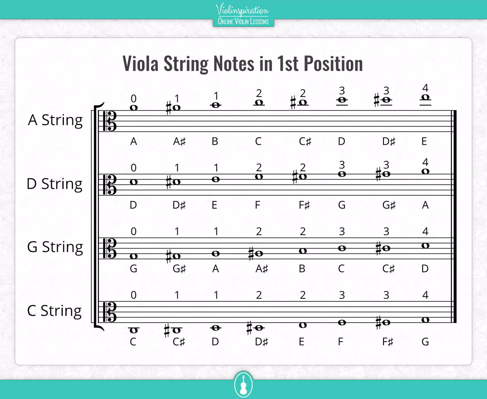

Hej jag heter Signe och jag ska berätta om tre av mina favorit stycken att spela på min altfiol och jag har spelat 11 eller 12 år låtarna heter
Hönsafötter det finns en text till och den går såhär Hönsafötter, gulerötter Mager som en trana Den som kysser töserna Han har en festlig vana Du är född i Köpenhamn Jag är född i Skåne Får jag vara din lille man Så får du vara min kåne tempot till Hönsafötter är snabbt och brakigt

Fransk Folkvisa är en låt där tempot är mitt emellan snabbt och långsamt och låter som ett classic stycke
Mitt sista favorit stycke är Bjäljerklang när jag spelar den känner jag lite av julen det mysiga kvällarna med familjen och varmchokladen
| Hönsafötter | Fransk Folkvisa | Bjäljerklang |
image and text courtesy unsplashand låt texten till hönsafötter